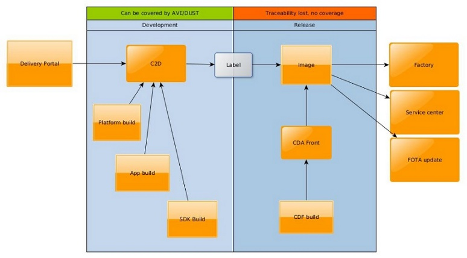
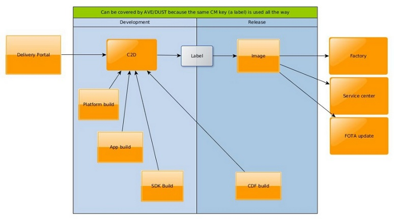

Verifying Customized Products
Warning
This material is not finished and is likely to change. A pilot
study is currently evaluating the best way to handle product composition
labels.
Overview
This document describes how to verify customized products with DUST compliant
AVE jobs. It does not describe how to test customized products by breaking
out of AVE’s golden cage model (i.e. by using untraceable content, such as
locally produced flashable images).
Terminology
- PCL: Product Composition Label. A C2D label that combines a system
label with a CDF to produce a fully customized product.
- CDF: Customization Data File. Technically a Debian package containing
additions, removals and replacements of content found in generic PPs. In CM
terms it is the toplevel configuration item that defines a product.
- PP: Product Package. A generic product definition, produced by an
official system build.
Premises
To be DUST compliant, an AVE job must only use “blessed” content sources: Git,
C2D or commit triggered official builds (Jenkins). This makes it impossible to
work with custom products because the product configurations (CDFs) are by
default not stored in C2D.

However, the CDFs are designed to be used with the same composition tools
as the generic products. That means they are also designed for storage in C2D.
All that is missing is to store the CDFs in C2D and set labels on combinations
of CDFs and system builds.

This setup is currently evaluated in a pilot study. The mechanism cannot
currently be offered to any and all users who wish to use it. Instead, users
should contact the AVE goveranance board to
discuss needs for specific PCLs.
Product Composition Label
A PCL is produced by removing redundant PPs and mw-system packages from a
system label. The CDF is then added. The result can be used as input to
semcpkgtoimg. Example:
semcpkgtoimg \
cdf-honami-1276-4318-customized-ce1-ce1 \
variant-userdebug \
result-flashable \
--label=cdf.1276.4318.R3C.sys.14.3.A.1.295
The first parameter is the Debian package name of the CDF. The last parameter
is the PCL.
A PCL is currently not added to any CM branch and will not appear in the output
from e.g. repository latestlabel <branch>.
PCL and DUST
Information on how to run PCL’s through DUST are found here.
Creation of PCLs
A specially crafted tool is used to create PCLs. It is available at
git://withheld-during-pilot-study
How to install:
- Download the git tree
- Install AVE. The tool uses API’s from the ave-workspace package to interact
with C2D.
How to run:
cd <git tree>
PYTHONPATH=src bin/c2d-cdf-label --system=<system label> --cdf=<http url>
Steps performed by the tool:
- Download the CDF zip file from CDA-Front (the --cdf parameter).
- Unpack the zip file to find the CDF Debian package.
- Load the Debian package. The metadata about the package (from its Debian
control file) will be used in later steps. E.g. CDF name/revision and its
target product.
- Download the system label manifest as XML.
- Load the XML file. Some metadata about the system label will be used in
later steps. Mostly the list of included packages as the manifest will be
rewritten to fit the CDF.
- Remove product packages from the manifest that are not referenced by the
CDF package (all but one).
- Remove mw-system packages from the manifest that do not match the CDF
target product (all but one). The effect of this step is that C2D will
automatically figure out that just one target product is usable with the new
CDF label. That piece of information is critical to DUST when it tries to
pick suitable hardware to run tests on.
- Remove the eng package from the manifest.
- Add a reference to the CDF name and revision to the manifest. The name is
exactly the CDF Debian package name as found in metadata, above.
- Check the new manifest for dependency problems, then write it to file.
- Create a new label in C2D. The name is based on the CDF’s id and revision,
plus the system label. E.g cdf.1276.1247.R5C.sys.14.3.A.1.297. The name
is not important but gives a user some idea of what the label contains.
- Upload the CDF Debian package to C2D. The package has not been modified in
any way. It is exactly as found in the original zip file.
- Use the modified manifest XML file to promote packages to the new label. I.e.
the CDF package and all system label packages that were not pruned in the
previous steps (product and mw-system packages).
- Wait for C2D to acknowledge the new label. (This is done by counting the
number of packages in the label and waiting until the score is what we
expect, given our local copy of the manifest.)
- Change the status of the label to INTERNAL. This makes the label metadata
visible and closes the label so that it cannot be modified by regular users.
- Print the name of the new label and exit.
Notes:
- The name of the new label is not a traceability feature. The name can be
absolutely anything that was not already taken in C2D.
- Traceability is supported by the label metadata that C2D keeps. The exact
names and revisions of all referenced packages, plus any additional metadata
we choose to set on the label.
- The current implementation does not set any additional metadata because
DUST only needs the metadata generated by C2D. However, release managers may
want to add things. The function c2d.label.set_metadata(key, value) may
be used from bin/c2d-cdf-label to do this.
- The metadata for the generated label still lists removed product packages
even though they are not referenced by the manifest. This is only at matter
of cleanliness and can be addressed later.
Does it Work?
Try to make the composition with semcpkgtoimg. E.g:
semcpkgtoimg \
cdf-honami-1276-4318-customized-ce1-ce1 \
variant-userdebug \
result-flashable \
--label=cdf.1276.4318.R3C.sys.14.3.A.1.295
If this works, then DUST will be able to do the same and use the resulting
image in verification.